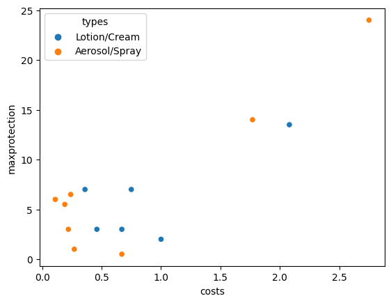
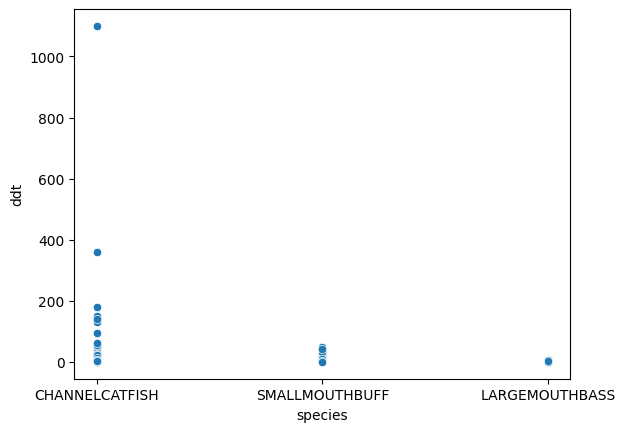

Atividade 6¶
# Imports
import numpy as np
import pandas as pd
import seaborn as sns
from statsmodels.formula.api import ols
from IPython.display import display
Exercício 1¶
dataset = pd.read_table(
'http://leg.ufpr.br/~walmes/data/business_economics_dataset/EXAMPLES/DELINQUE.DAT',
header=None,
sep='\s+',
names=['dollars', 'groups'],
usecols=[0,1])
sns.scatterplot(data=dataset, x='groups', y='dollars');
modelo = ols('dollars ~ groups', data=dataset)
fit = modelo.fit()
display(fit.summary())
| Dep. Variable: | dollars | R-squared: | 0.205 |
|---|---|---|---|
| Model: | OLS | Adj. R-squared: | 0.146 |
| Method: | Least Squares | F-statistic: | 3.482 |
| Date: | Thu, 02 Dec 2021 | Prob (F-statistic): | 0.0452 |
| Time: | 00:49:50 | Log-Likelihood: | -194.88 |
| No. Observations: | 30 | AIC: | 395.8 |
| Df Residuals: | 27 | BIC: | 400.0 |
| Df Model: | 2 | ||
| Covariance Type: | nonrobust |
| coef | std err | t | P>|t| | [0.025 | 0.975] | |
|---|---|---|---|---|---|---|
| Intercept | 229.6000 | 53.426 | 4.298 | 0.000 | 119.979 | 339.221 |
| groups[T.M] | 80.3000 | 75.556 | 1.063 | 0.297 | -74.728 | 235.328 |
| groups[T.U] | 198.2000 | 75.556 | 2.623 | 0.014 | 43.172 | 353.228 |
| Omnibus: | 2.611 | Durbin-Watson: | 2.758 |
|---|---|---|---|
| Prob(Omnibus): | 0.271 | Jarque-Bera (JB): | 1.469 |
| Skew: | 0.233 | Prob(JB): | 0.480 |
| Kurtosis: | 2.021 | Cond. No. | 3.73 |
Notes:
[1] Standard Errors assume that the covariance matrix of the errors is correctly specified.
Exercício 2¶
dataset = pd.read_table(
'http://leg.ufpr.br/~walmes/data/business_economics_dataset/EXERCISE/REPELLEN.DAT',
header=None,
sep='\s+',
names=['types', 'costs', 'maxprotection'])
sns.scatterplot(data=dataset, x='costs', y='maxprotection', hue='types');

modelo = ols('costs ~ types', data=dataset)
fit = modelo.fit()
display(fit.summary())
/opt/hostedtoolcache/Python/3.7.12/x64/lib/python3.7/site-packages/scipy/stats/stats.py:1542: UserWarning: kurtosistest only valid for n>=20 ... continuing anyway, n=14
"anyway, n=%i" % int(n))
| Dep. Variable: | costs | R-squared: | 0.005 |
|---|---|---|---|
| Model: | OLS | Adj. R-squared: | -0.078 |
| Method: | Least Squares | F-statistic: | 0.05770 |
| Date: | Thu, 02 Dec 2021 | Prob (F-statistic): | 0.814 |
| Time: | 00:49:50 | Log-Likelihood: | -16.370 |
| No. Observations: | 14 | AIC: | 36.74 |
| Df Residuals: | 12 | BIC: | 38.02 |
| Df Model: | 1 | ||
| Covariance Type: | nonrobust |
| coef | std err | t | P>|t| | [0.025 | 0.975] | |
|---|---|---|---|---|---|---|
| Intercept | 0.7775 | 0.298 | 2.613 | 0.023 | 0.129 | 1.426 |
| types[T.Lotion/Cream] | 0.1092 | 0.454 | 0.240 | 0.814 | -0.881 | 1.099 |
| Omnibus: | 7.888 | Durbin-Watson: | 1.414 |
|---|---|---|---|
| Prob(Omnibus): | 0.019 | Jarque-Bera (JB): | 4.708 |
| Skew: | 1.383 | Prob(JB): | 0.0950 |
| Kurtosis: | 3.648 | Cond. No. | 2.48 |
Notes:
[1] Standard Errors assume that the covariance matrix of the errors is correctly specified.
Exercício 3¶
dataset = pd.read_table(
'http://leg.ufpr.br/~walmes/data/business_economics_dataset/EXERCISE/DDT.DAT',
header=None,
sep='\s+',
names=['river', 'mile', 'species', 'length', 'weight', 'ddt'])
sns.scatterplot(data=dataset, x='species', y='ddt');

modelo = ols('ddt ~ mile + length + weight + species', data=dataset)
fit = modelo.fit()
display(fit.summary())
| Dep. Variable: | ddt | R-squared: | 0.043 |
|---|---|---|---|
| Model: | OLS | Adj. R-squared: | 0.008 |
| Method: | Least Squares | F-statistic: | 1.236 |
| Date: | Thu, 02 Dec 2021 | Prob (F-statistic): | 0.296 |
| Time: | 00:49:51 | Log-Likelihood: | -861.46 |
| No. Observations: | 144 | AIC: | 1735. |
| Df Residuals: | 138 | BIC: | 1753. |
| Df Model: | 5 | ||
| Covariance Type: | nonrobust |
| coef | std err | t | P>|t| | [0.025 | 0.975] | |
|---|---|---|---|---|---|---|
| Intercept | -147.2734 | 99.338 | -1.483 | 0.140 | -343.695 | 49.148 |
| species[T.LARGEMOUTHBASS] | 29.0383 | 49.743 | 0.584 | 0.560 | -69.319 | 127.396 |
| species[T.SMALLMOUTHBUFF] | -3.8763 | 27.128 | -0.143 | 0.887 | -57.516 | 49.763 |
| mile | 0.0876 | 0.083 | 1.051 | 0.295 | -0.077 | 0.252 |
| length | 4.6739 | 2.760 | 1.693 | 0.093 | -0.784 | 10.132 |
| weight | -0.0509 | 0.041 | -1.231 | 0.220 | -0.133 | 0.031 |
| Omnibus: | 275.571 | Durbin-Watson: | 1.943 |
|---|---|---|---|
| Prob(Omnibus): | 0.000 | Jarque-Bera (JB): | 58220.268 |
| Skew: | 9.313 | Prob(JB): | 0.00 |
| Kurtosis: | 99.729 | Cond. No. | 1.51e+04 |
Notes:
[1] Standard Errors assume that the covariance matrix of the errors is correctly specified.
[2] The condition number is large, 1.51e+04. This might indicate that there are
strong multicollinearity or other numerical problems.